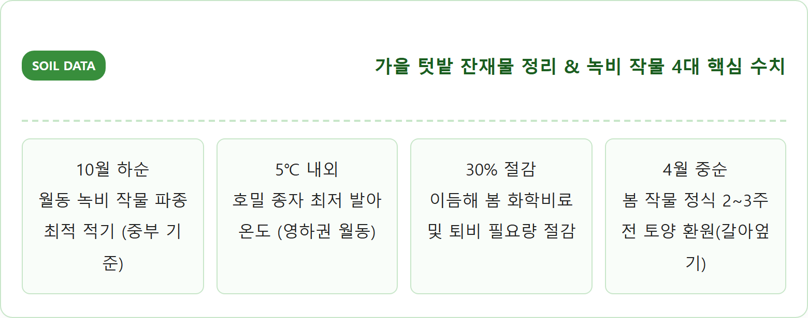
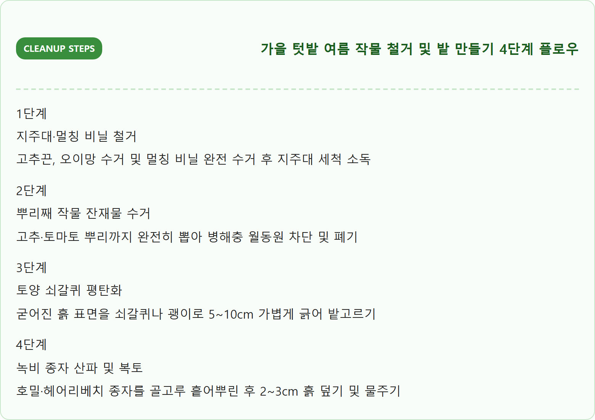
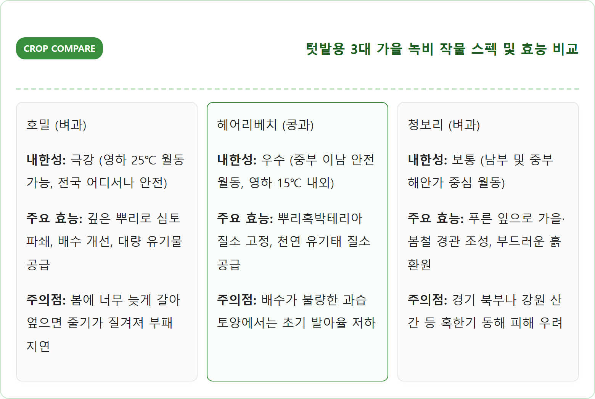
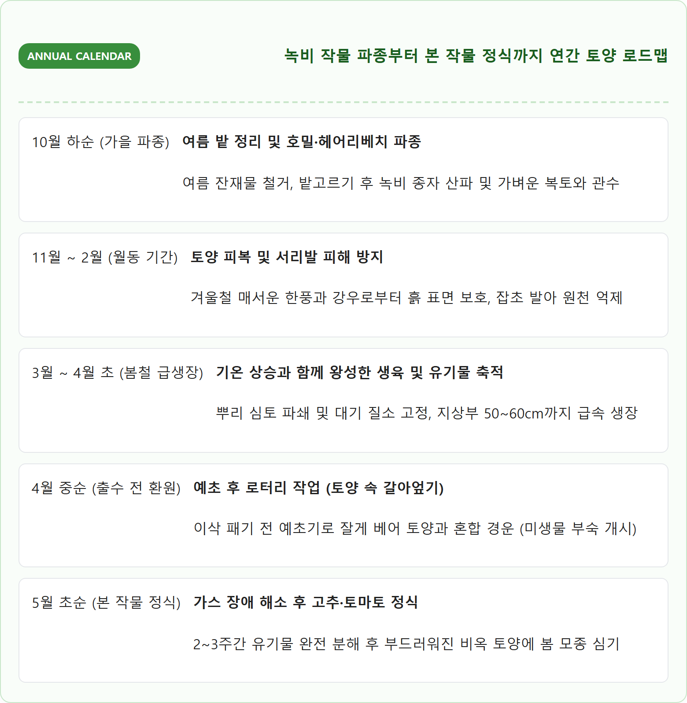
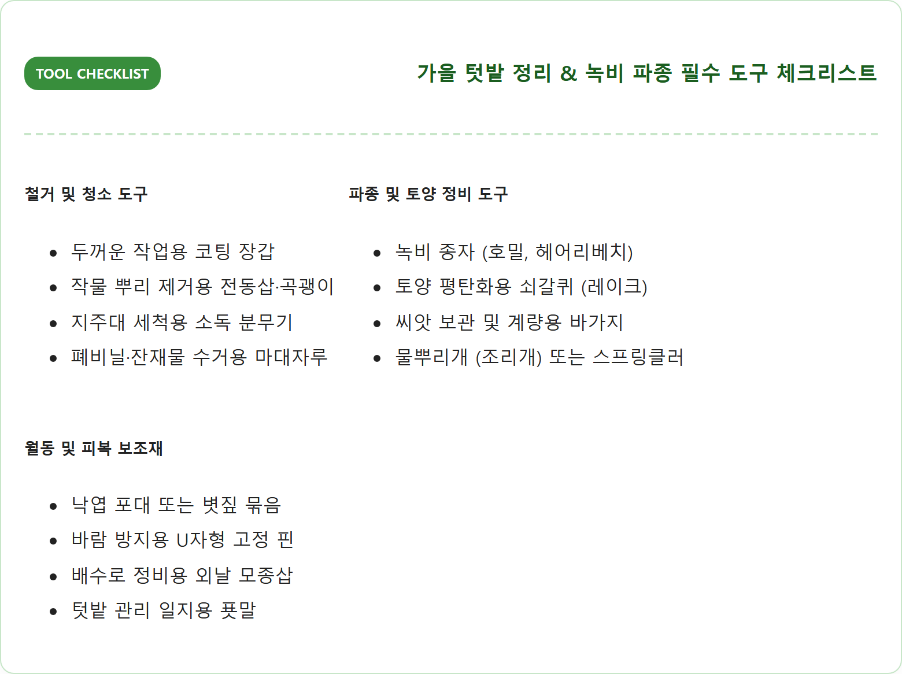
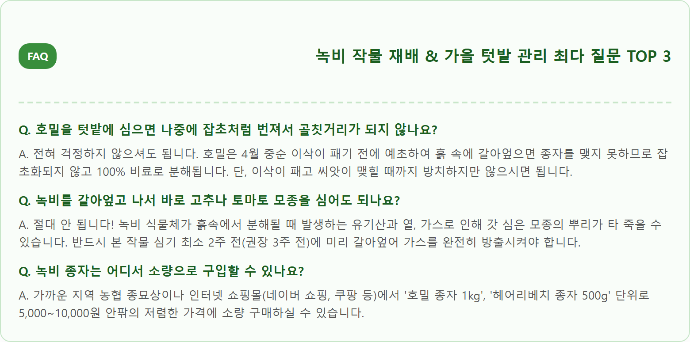

가을 텃밭 여름 채소 정리와 빈 밭 녹비 작물 심는 법 — 호밀·헤어리베치 파종 시기와 토양 관리
서리가 내리기 시작하는 10월 하순은 한여름 동안 수확을 안겨준 고추, 토마토, 가지 등 여름 채소 잔재물을 깨끗이 정리하고 다가올 겨울 동안 텃밭 흙을 건강하게 살려낼 '녹비(綠肥) 작물'을 심어야 하는 골든타임입니다.
수확이 끝난 밭을 그대로 방치하면 마른 줄기 속에 탄저병균과 해충 번데기가 월동하여 이듬해 농사를 망칠 뿐만 아니라, 겨울철 매서운 북풍과 서리발에 비옥한 표토가 유실되고 토양이 딱딱하게 굳어버립니다. 이때 추위에 강한 호밀, 헤어리베치, 청보리 등 친환경 풋거름 작물을 파종하면 겨울철 잡초를 막고 공기 중 질소를 흙 속에 자연 축적하여 내년 봄 화학비료 없이도 작물이 무럭무럭 자라는 비옥한 텃밭으로 탈바꿈시킬 수 있습니다.
📷 AI 대표 메인 썸네일 생성 영역images/261025/6_house_fall_garden_cleanup_cover_crop_1.png
A highly detailed, photorealistic eye-level photograph of a well-tended Korean rural vegetable garden in late autumn. In one section of the dark, rich crumbly soil, newly sprouted vibrant green winter rye and hairy vetch seedlings are emerging in neat rows. In the adjacent section, neatly stacked wooden stakes and cleared dry tomato and pepper vine residues are collected in a wheelbarrow. Golden autumn afternoon sunlight casting long warm shadows across the garden bed. Traditional Korean farm fence, red persimmon trees heavy with fruit in the background. Crisp autumn atmosphere, natural warm colors, ultra-high resolution, authentic rural lifestyle, 1:1 aspect ratio.
가을 텃밭 여름 작물 정리 후 싹을 틔운 녹비 작물 호밀 새싹과 토양 / AI 제작 이미지
01 | 가을 텃밭 관리의 핵심 — 여름 작물 수확 마무리와 겨울철 빈 밭 토양 보존의 중요성
봄부터 여름 내내 풍성한 식탁을 책임져 주던 고추, 가지, 토마토, 오이 등 가지과·박과 작물들은 서리를 맞으면 잎이 검게 변하고 생육을 완전히 멈추게 됩니다.
많은 초보 텃밭지기들이 가을 배추와 무 수확에만 신경 쓰느라 수확이 끝난 여름 밭을 봄까지 그대로 방치하는 실수를 범합니다. 하지만 생명을 다한 식물체를 밭에 방치하면 곰팡이 포자와 해충이 땅속으로 숨어들어 이듬해 연작 장해와 병충해 대발생의 원흉이 됩니다.
또한 겨울철 아무것도 심겨 있지 않은 나대지(맨흙) 상태의 밭은 겨울바람에 의해 미세한 유기물 표토가 날아가고, 눈과 비가 녹으며 토양 양분이 지하로 용탈되어 이듬해 봄 흙이 돌처럼 단단하게 굳어버리는 물리적 악순환을 겪게 됩니다.
따라서 잔재물을 신속히 수거해 밭을 청결히 소독하고, 겨울 동안 흙을 덮어줄 녹비 피복 작물을 심는 것은 지속 가능한 유기농 텃밭 가꾸기의 가장 기초적인 첫걸음입니다.

가을 텃밭 토양 관리 핵심 지표 / 인포그래픽 카드
02 | 여름 작물 정리 순서 — 고추, 가지, 토마토 잔재물 처리와 병해충 잠복 차단
여름 작물 정리는 단순히 줄기를 잘라내는 것을 넘어, 뿌리째 뽑아내어 병원균의 은신처를 원천 차단하는 정밀한 작업이어야 합니다.
먼저 줄기를 묶어두었던 지주대(고추대)와 유인끈, 오이망, 비닐 멀칭을 차례대로 걷어냅니다. 지주대는 흙을 털어내고 락스 희석액(물 100 : 락스 1)을 뿌려 햇볕에 바짝 말려 보관하면 내년 봄 세균성 병원균 감염을 예방할 수 있습니다.
작물 줄기는 낫으로 지상부를 자르지 말고 뿌리째 통째로 뽑아내야 합니다. 뿌리에 선충이나 뿌리혹병균이 기생하고 있을 수 있기 때문입니다. 수거한 병든 작물 잔재물은 텃밭 한구석에 방치하거나 거름으로 쓰지 말고, 종량제 봉투에 담아 배출하거나 소각 가능한 처리장으로 보내는 것이 안전합니다.

여름 작물 정리 4단계 플로우 / 인포그래픽 카드
03 | 녹비 작물이란 무엇인가 — 천연 비료이자 잡초 방제와 흙 살리기의 원리
녹비(綠肥, Green Manure)란 말 그대로 푸른 풀 상태의 작물을 그대로 밭에 갈아엎어 식물의 영양 공급원으로 삼는 '천연 풋거름'을 의미합니다.
가을에 녹비 작물을 심어두면 겨울철 흙 표면을 빽빽한 녹색 카펫처럼 덮어주어 냉이, 광대나물, 별꽃 등 겨울 잡초의 발아와 번식을 완벽하게 차단합니다.
녹비 작물의 뿌리는 지하 1~2m 깊이까지 뻗어나가 단단하게 다져진 심토층에 구멍을 뚫어주는 '자연 배수관(심토 파쇄)' 역할을 수행합니다. 이로 인해 토양의 공기 유통(통기성)과 물 빠짐(투수성)이 획기적으로 개선됩니다.
특히 봄철 작물이 자라 꽃이 피기 직전 연한 줄기와 잎을 잘라 흙과 함께 갈아엎으면, 토양 속 유익한 미생물의 먹이가 되어 단기간에 흙을 지렁이가 살아 숨 쉬는 포슬포슬한 떼알 구조(단립 구조)로 변화시킵니다.
04 | 텃밭용 대표 녹비 작물 비교 — 호밀 vs 헤어리베치 vs 청보리 장단점과 선택 기준
텃밭에 심는 대표적인 추계 녹비 작물은 벼과의 **호밀**과 **청보리**, 그리고 콩과의 **헤어리베치**가 있으며, 텃밭 토양의 성격에 따라 적절한 단일 파종 또는 혼파(섞어 뿌리기)를 선택해야 합니다.
**호밀(Rye)**은 영하 25℃의 혹한에서도 거뜬히 생존하는 최고의 내한성을 지니고 있으며, 뿌리가 깊고 억세 점토질이 심해 물이 잘 안 빠지는 텃밭 흙을 개량하는 데 가장 탁월합니다. 유기물 생산량이 매우 풍부합니다.
**헤어리베치(Hairy Vetch)**는 덩굴성 콩과 식물로, 뿌리에 공생하는 뿌리혹박테리아가 공기 중의 질소를 흡수해 흙 속에 축적합니다. 질소 비료 효과가 매우 뛰어나 화학 질소 비료를 전혀 주지 않아도 될 정도로 땅심을 비옥하게 만듭니다.
텃밭 전문가들은 호밀과 헤어리베치를 7:3 또는 6:4 비율로 섞어 심는 **'혼파(혼합 파종)'**를 가장 추천합니다. 호밀이 쓰러지지 않게 지지대 역할을 해주고, 헤어리베치가 질소를 공급하여 이상적인 탄질비(C/N율)를 완성하기 때문입니다.

3대 가을 녹비 작물 특성 비교표 / 인포그래픽 카드
05 | 녹비 작물 파종 적기와 씨앗 뿌리는 법 — 10월 중하순 파종량과 복토 요령
녹비 작물은 겨울이 오기 전 어느 정도 뿌리를 내리고 3~5장의 잎을 확보해야 혹한을 견딜 수 있으므로 파종 시기가 매우 중요합니다.
중부 지방 기준으로 **10월 중순부터 10월 말까지**가 최적기이며, 남부 지방은 11월 상순까지도 파종이 가능합니다. 너무 일찍 파종하면 가을에 과도하게 자라 겨울에 얼어 죽기 쉽고, 너무 늦으면 발아가 불량해집니다.
파종 방법은 간단합니다. 텃밭 흙 표면을 쇠갈퀴로 가볍게 긁어준 뒤, 종자를 손에 쥐고 밭 전체에 골고루 흩어뿌리는 '산파(흩어뿌림)'를 합니다. 파종량은 10평(33㎡) 기준 호밀 약 500~600g, 헤어리베치 약 300g 수준이면 충분합니다.
씨앗을 뿌린 후에는 쇠갈퀴로 흙을 다시 긁어 종자가 2~3cm 깊이로 덮이도록 복토해 주어야 새들이 파먹지 못하고 발아 수분을 유지할 수 있습니다. 흙을 덮은 뒤 물뿌리개로 촉촉하게 물을 주면 4~5일 만에 파릇파릇한 새싹이 일제히 고개를 내밉니다.

텃밭 토양 관리 연간 캘린더 / 인포그래픽 카드
06 | 겨울철 월동 관리 — 서리발 피해 방지와 배수로 정비 요령
녹비 작물이 싹을 틔운 후 초겨울에 접어들면 영하의 날씨로 인해 땅이 얼었다 녹았다를 반복하며 흙이 부풀어 오르는 '서리발 현상'이 나타납니다.
서리발이 심하면 어린 호밀과 헤어리베치의 뿌리가 공기 중에 노출되어 말라 죽을 수 있습니다. 따라서 12월 초순 땅이 얼기 시작할 때 텃밭을 발로 꾹꾹 밟아주는 **'답압(밟아주기)'**을 해 주면 뿌리가 흙에 밀착되어 동해 피해를 완벽히 예방할 수 있습니다.
또한 겨울철 내린 눈이나 초봄 해빙기 빗물이 밭에 고여 웅덩이를 만들면 녹비 작물의 뿌리가 질식해 썩을 수 있으므로, 밭 주변에 물이 자연스럽게 빠져나갈 수 있도록 가벼운 배수로(물고랑)를 내어주어야 합니다.
07 | 봄철 녹비 작물 환원(갈아엎기) 시기 — 질소 비료 공급과 유기물 증대 효과
녹비 작물의 효과를 극대화하는 결정적인 기술은 **'갈아엎는 타이밍(환원 시기)'**을 놓치지 않는 것입니다.
호밀의 경우 반드시 **이삭이 패기 전(출수 전, 키 50~60cm 내외)**에 갈아엎어야 합니다. 이삭이 피고 나면 줄기가 나무처럼 뻣뻣해져(목질화) 흙속에서 분해되는 데 너무 오랜 시간이 걸리고 미생물이 토양 속 질소를 일시적으로 빼앗아가는 '질소 기아 현상'이 발생할 수 있습니다.
가장 이상적인 시기는 고추, 고구마, 토마토 등 5월 초에 심을 본 작물을 정식하기 **최소 2주에서 3주 전(4월 중순)**입니다. 예초기나 낫으로 지상부를 잘게 자른 뒤, 삽이나 관리기로 흙과 함께 뒤섞어 주면 2주간 미생물이 녹비 식물체를 분해하면서 가스를 방출하고 토양 속에 천연 부엽토 거름을 생성합니다.

가을 텃밭 관리 준비물 체크리스트 / 인포그래픽 카드
08 | 녹비 작물을 심지 못할 때의 대안 — 볏짚, 낙엽 피복(멀칭)과 퇴비 투입법
11월 중순이 넘어 시기를 놓쳐 녹비 작물 종자를 파종하기 어렵다면 맨흙을 그대로 방치하지 말고 유기물 피복(멀칭) 대안을 적용해야 합니다.
가장 훌륭한 대안은 주변 공원이나 가로수에서 쉽게 구할 수 있는 **마른 활엽수 낙엽**과 농가에서 구한 **볏짚**입니다. 밭 전체에 낙엽이나 볏짚을 5~10cm 두께로 두툼하게 덮어주면 훌륭한 보온 이불 역할을 하여 땅속 유익균과 지렁이를 보호하고 서리발 피해를 막아줍니다.
낙엽을 덮기 전 완숙 퇴비나 유기질 비료를 평당 2~3kg 정도 가볍게 뿌린 뒤 덮어주면 겨울 동안 눈비에 녹아내려 흙 속 깊숙이 영양분이 스며드는 '자연 숙성 발효'가 일어납니다. 바람에 낙엽이 날리지 않도록 나뭇가지나 흙을 군데군데 얹어 고정해 주세요.
09 | 가을 텃밭 농기구 정비 및 지주대 소독 보관 팁 — 내년 농사 준비
작물 정리가 끝난 뒤 농기구를 정비하고 올바르게 보관하는 일은 내년 농사의 성공을 좌우하는 중요한 마무리 작업입니다.
삽, 괭이, 호미, 쇠갈퀴 등 철제 농기구는 물로 깨끗이 흙을 씻어낸 뒤 그늘에서 완전히 건조하고, 녹 방지를 위해 식물성 기름이나 WD-40을 헝겊에 묻혀 표면에 얇게 발라 보관해야 수명이 10년 이상 연장됩니다.
고추 지주대와 오이망은 밭에 세워둔 채로 겨울을 나면 눈의 무게에 휘어지거나 삭아서 망가집니다. 반드시 뽑아서 10~20개씩 끈으로 묶어 비를 맞지 않는 창고나 처마 밑에 뉘어서 보관하세요. 전지가위나 낫 등 날카로운 절단 도구는 숫돌에 날을 갈아두면 이듬해 봄 작업을 훨씬 수월하게 시작할 수 있습니다.
10 | 가을 빈 밭 토양 관리 실천 체크리스트와 자주 묻는 질문(FAQ)
텃밭 가을 관리와 녹비 작물 파종에 대해 초보 농부들이 가장 많이 질문하는 핵심 사항을 Q&A로 정리했습니다.

녹비 작물 재배 자주 묻는 질문 FAQ / 인포그래픽 카드
⚠️ 병든 작물 잔재물 매립 금지
탄저병에 걸린 고추 줄기나 역병이 발생한 토마토 뿌리를 밭에 그대로 묻으면 병원균 포자가 토양 속에서 수년간 생존합니다.
병든 작물은 절대 텃밭 퇴비장으로 넣지 마시고 반드시 분리수거하여 밭 밖으로 완전히 배출하시기 바랍니다.